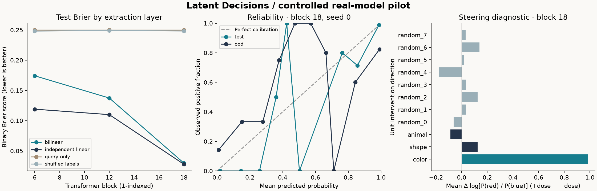

SMALL PROBES. TESTABLE CLAIMS.
What can we read?
What actually matters?
A laptop-scale experiment in asking precise questions of a language model’s activations—and checking the answers.
Status: controlled real-model pilot. Three known instruction properties; no claim of general semantic transfer, deception detection, or novelty over activation oracles.
416fully crossed prompts · five isolated splits
0.49B / frozenQwen2.5-0.5B-Instruct · CPU probe training
MPS captureLocal execution · no model API
MEASUREMENTS, NOT MOCK DATA
A small experiment with explicit controls.
At validation-selected block 18, the shared probe achieves 95.0% held-out accuracy versus 95.5% for independent linear probes. On the unseen prompt template it reaches 78.6%. The privileged full-prompt text baseline reaches 100.0%. This establishes an executable pipeline, not a gain over existing probes.
12.5s capture · 5.9s probe fitting · 2.77 GiB capture process RSS. Process RSS is not total unified-memory usage. Capture excludes probe fitting and interventions; these are wall-clock measurements from this run, not performance guarantees.

Source: local Qwen/Qwen2.5-0.5B-Instruct run, 2026-09-22. Brier curves average 3 training seeds; reliability uses the first seed. Steering averages fixed test prompts, with a dose of 5% of the median training activation norm.
EXPLORE THE SAVED RUN
Compare activation-head baselines.
Means over 3 seeds. Layer selected using validation NLL only. Temperature fitted on a separate calibration split. Small ECE does not prove calibration under general distribution shift.
INTERVENTIONS
Reading and influencing are separate tests.
We added and subtracted fixed-norm directions at block 18 on 32 held-out prompts.
The outcome is a change in the target model’s red-versus-blue log odds. Eight equal-norm random directions
and two other properties act as comparators. Per-prompt vocabulary KL and color-token mass are saved.
Exploratory result. Steering sufficiency does not establish necessity, natural use, or a uniquely identified mechanism.
This pilot does not evaluate deception or hidden intent.
WHAT THIS SUPPORTS
An executable starting point.
The system captures actual residual-stream states, fits a rank-constrained question-conditioned readout, checks leakage controls, and measures interventions on the original target.
WHAT COMES NEXT
A harder test of transfer.
Hold out entire property families, reverse irrelevant correlations, compare against a trained activation oracle, and measure whether improvements survive new models and intervention distributions.